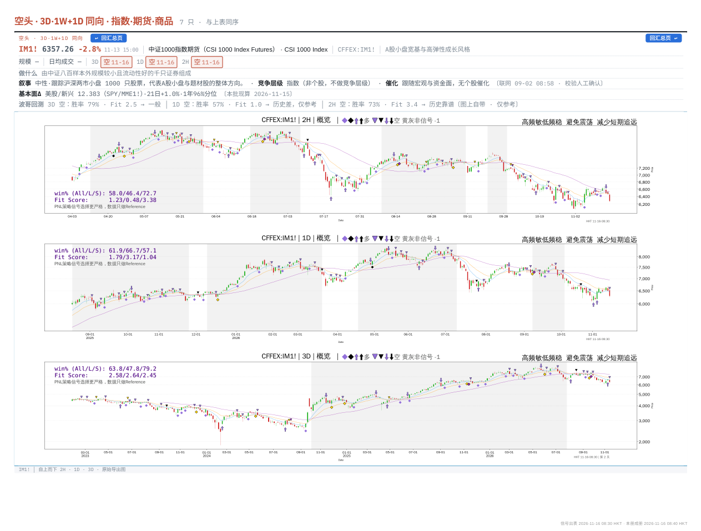
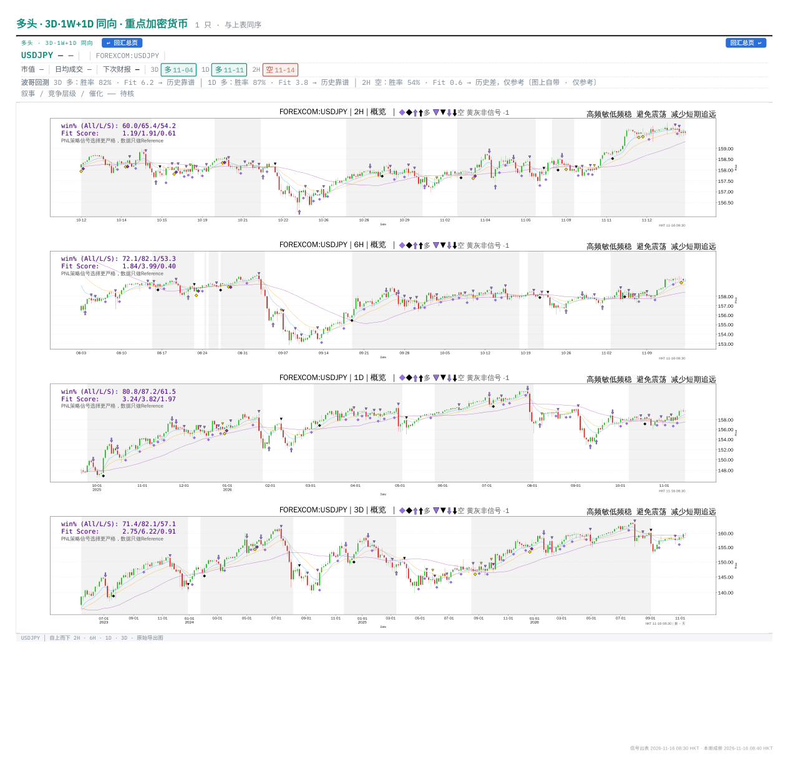
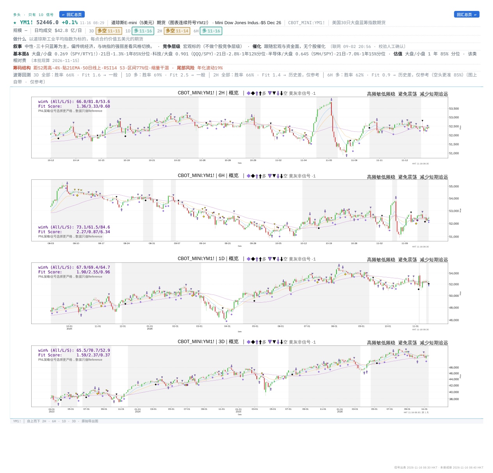
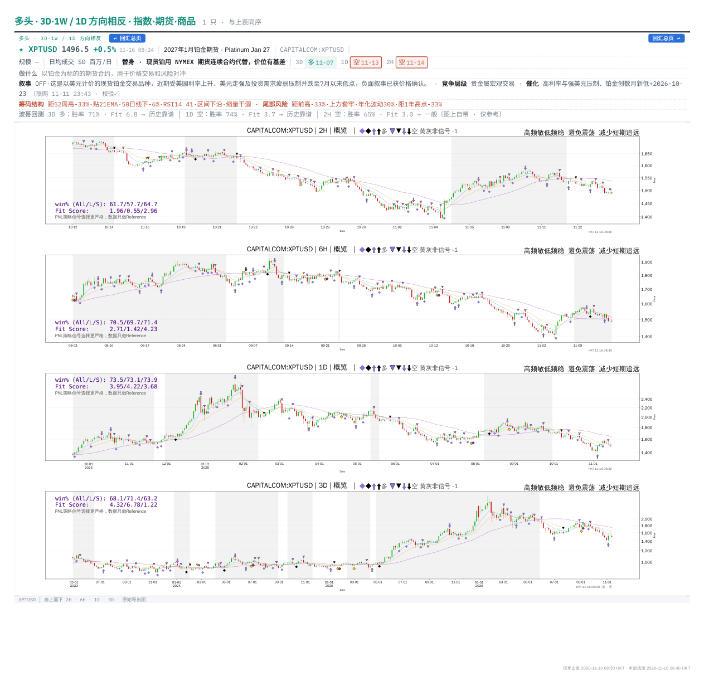
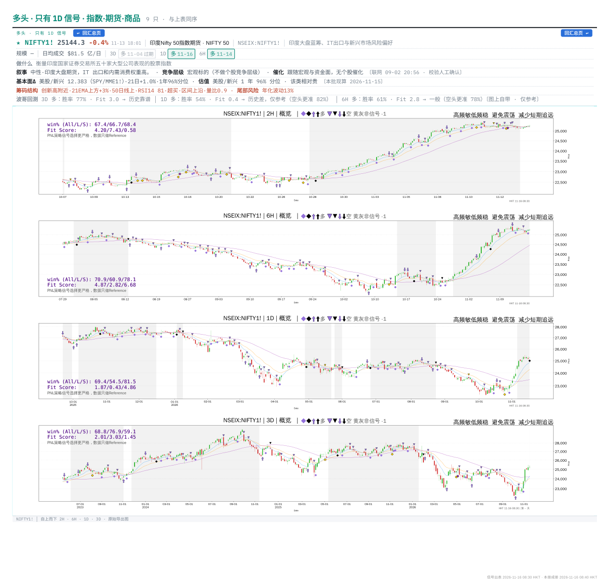
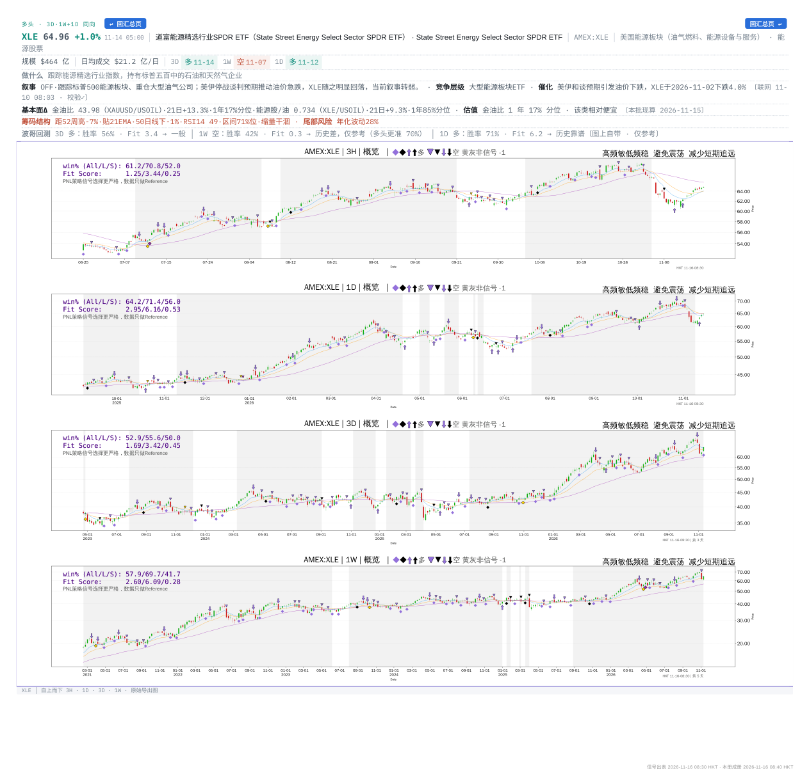
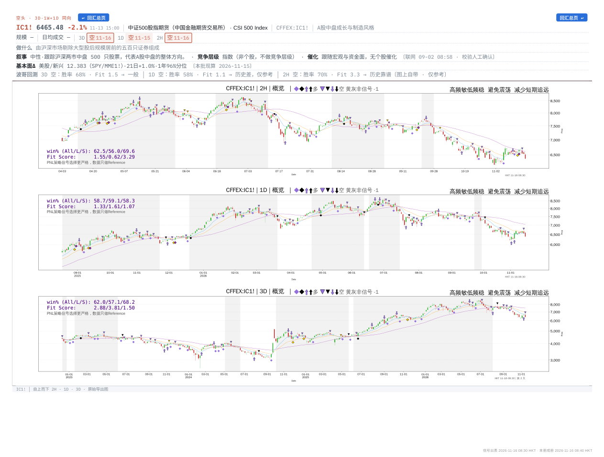
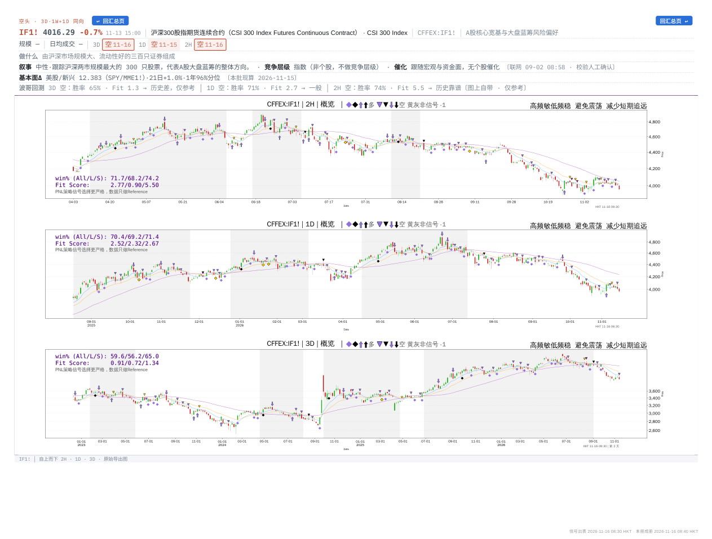
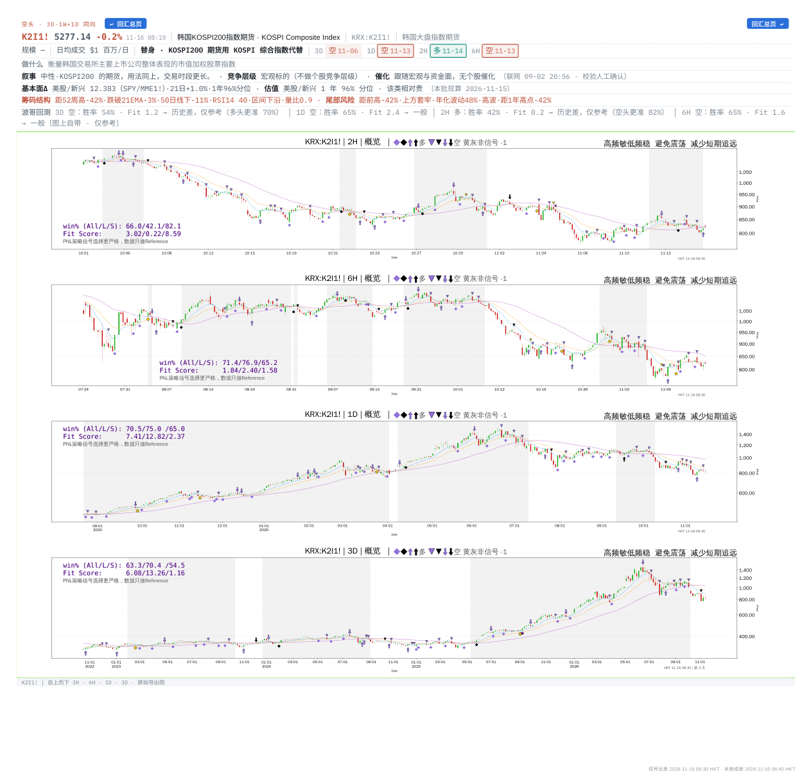
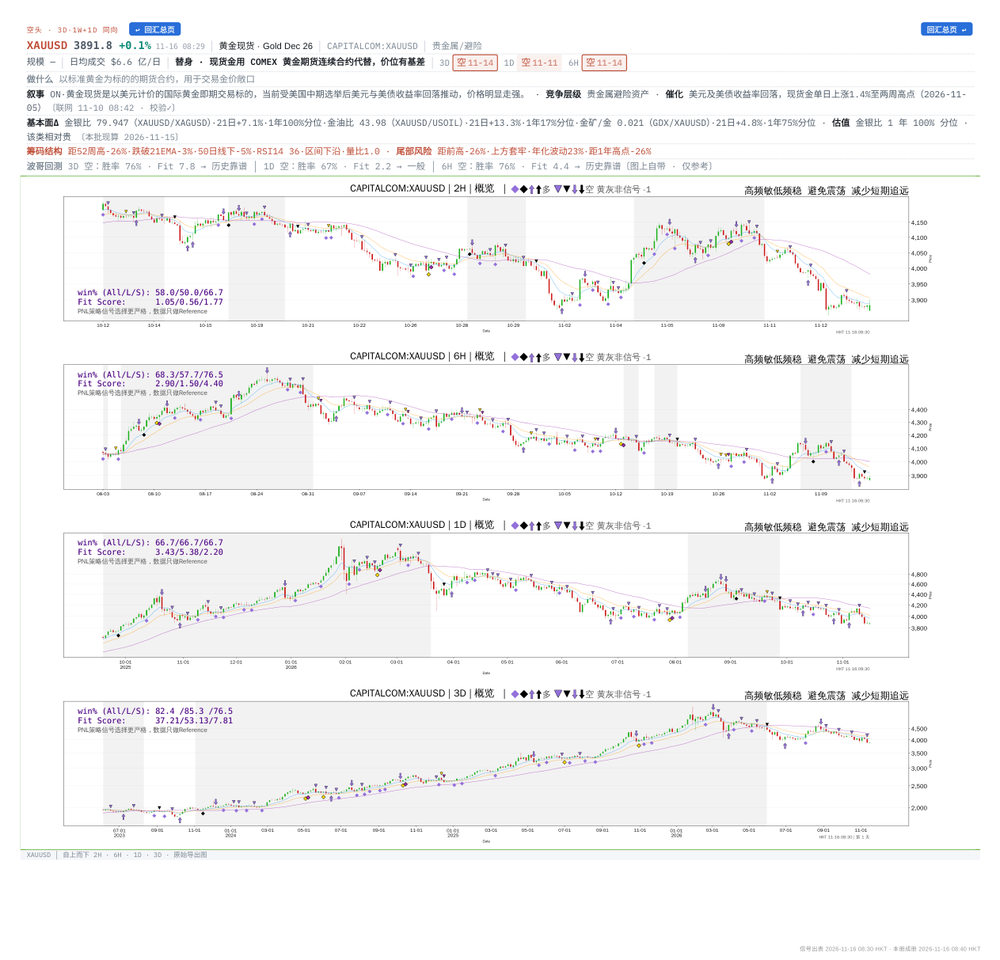
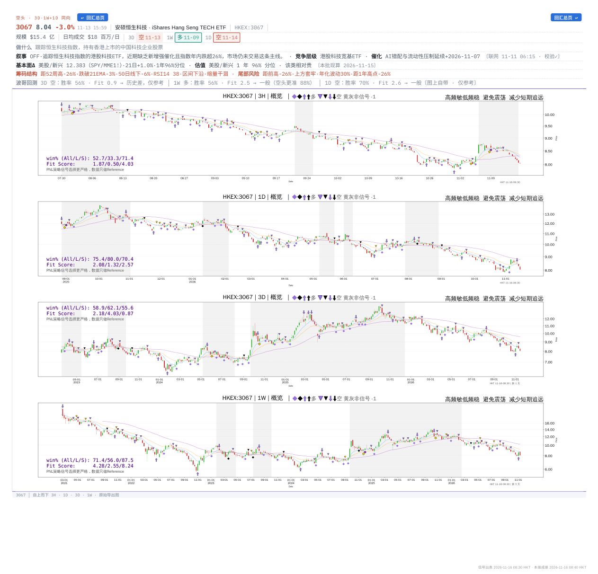
| 代码 | 名称 | 方向 | 周期 | 现价 | 日涨跌 | RS21 | RSI14 | 财报 | 出自 · 点开归档 |
|---|---|---|---|---|---|---|---|---|---|
| IM1! | 中证1000指数期货（CSI | 空 | 3D 空 11-16 · 1D 空 11-16 · 3H 空 11-16 | 6357.26 | -2.8% | 1115 Macro 0830 bjt | |||
| USDJPY | 多 | 3D 多 11-04 · 1D 多 11-11 · 3H 空 11-14 | — | 1115 Macro 0830 bjt | |||||
| YM1! | 道琼斯E-mini（5美元） | 多 | 3D 多空 11-11 · 1D 多 11-16 · 3H 多 11-16 | 52446.0 | +0.1% | RS +0.8 | RSI 53 | 1115 Macro 0830 bjt | |
| XPTUSD | Platinum Jan 2 | 空 | 3D 多 11-07 · 1D 空 11-13 · 3H 空 11-14 | 1496.5 | +0.5% | RS -3.0 | RSI 41 | 1115 Macro 0830 bjt | |
| NIFTY1! | 印度Nifty 50指数期货 | 多 | 3D 多 11-04 · 1D 多 11-16 · 3H 多 11-14 | 25144.3 | -0.4% | RS +12.0 | RSI 81 | 1115 Macro 0830 bjt | |
| XLE | 道富能源精选行业SPDR E | 多 | 3D 多 11-14 · 1D 多 11-12 | 64.96 | +1.0% | RS -5.6 | RSI 49 | 1115 Macro 0830 bjt | |
| DXY | 多 | 3D 多 11-07 · 1D 多 11-11 | — | 1115 Macro 0830 bjt | |||||
| IC1! | 中证500股指期货（中国金融 | 空 | 3D 空 11-16 · 1D 空 11-15 · 3H 空 11-16 | 6465.48 | -2.1% | 1115 Macro 0830 bjt | |||
| IF1! | 沪深300股指期货连续合约（ | 空 | 3D 空 11-16 · 1D 空 11-15 · 3H 空 11-16 | 4016.29 | -0.7% | 1115 Macro 0830 bjt | |||
| K2I1! | 韩国KOSPI200指数期货 | 空 | 3D 空 11-06 · 1D 空 11-13 · 3H 空 11-13 | 5277.14 | -0.2% | RS -3.9 | RSI 40 | 1115 Macro 0830 bjt | |
| XAUUSD | 黄金现货 | 空 | 3D 空 11-14 · 1D 空 11-11 · 3H 空 11-14 | 3891.8 | +0.1% | RS -2.2 | RSI 36 | 1115 Macro 0830 bjt | |
| 3067 | 安硕恒生科技 | 空 | 3D 空 11-13 · 1D 空 11-14 | 8.04 | -3.0% | RS -1.0 | RSI 38 | 1115 Macro 0830 bjt | |
| LABU | Direxion Daily | 空 | 3D 空 11-14 · 1D 空 11-13 | 214.83 | -1.7% | RS -1.4 | RSI 44 | 1115 Macro 0830 bjt |